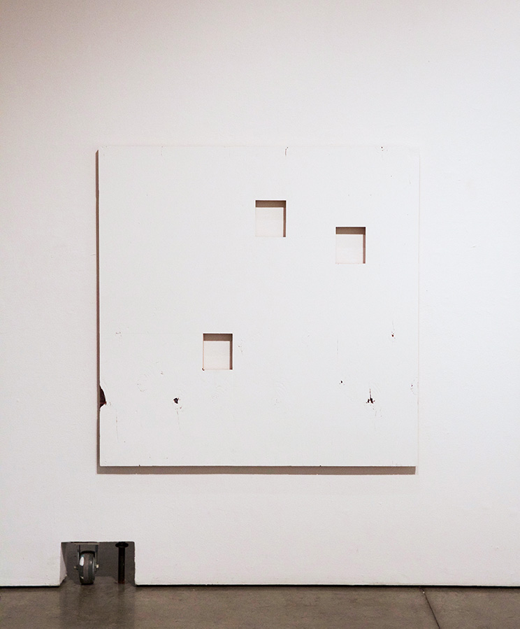
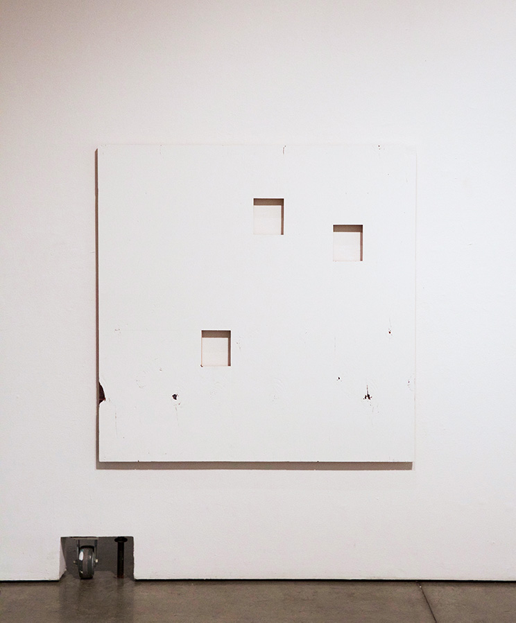

Ghosts
MFA Thesis Exhibition - Emily Carr University
March 2016 - Concourse Gallery, Vancouver, British Columbia
Excerpt:
How is it, today, that we derive meaning from experience?
Expansive technologies of information capture and analysis are available to us, but they often serve more
to divide and categorize our experiences than they do to connect them; providing us with easy, convenient tidbits of information as we need them.
What's at stake in this kind of technological mediation and what role can visual art take in encouraging the
formulation of knowledge based on primary, rather than secondary or filtered ways of seeing?
This exhibition examines the potential of the unfiltered, primary art experience, and the idea that the directness
of these experiences might be extended into non-art experience through using
established genres of art, such as painting, as reframing devices.